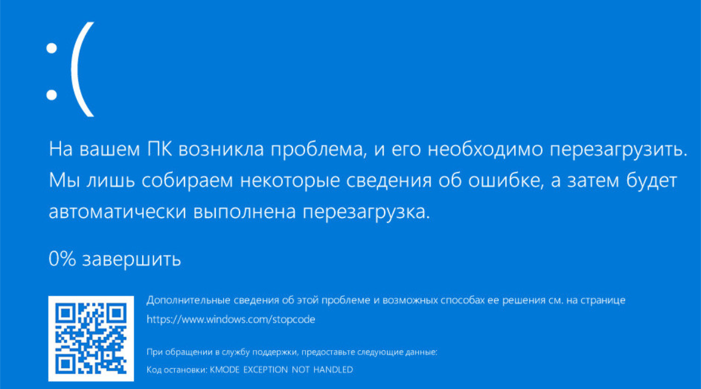

Сапёр
Плоское или объёмное игровое поле разделено на смежные ячейки (квадраты, шестиугольники, кубы и т. п.), некоторые из которых «заминированы»; количество «заминированных» ячеек известно. Целью игры является открытие всех ячеек, не содержащих мины. Игрок открывает ячейки, стараясь не открыть ячейку с миной. Открыв ячейку с миной, он проигрывает. Мины расставляются после первого хода, поэтому в новых версиях проиграть на первом же ходу невозможно. Если под открытой ячейкой мины нет, то в ней появляется число, показывающее, сколько ячеек, соседствующих с только что открытой, «заминировано» (в каждом варианте игры соседство определяется по-своему); используя эти числа, игрок пытается рассчитать расположение мин, однако иногда даже в середине и в конце игры некоторые ячейки всё же приходится открывать наугад. Если под соседними ячейками тоже нет мин, то открывается некоторая «не заминированная» область до ячеек, в которых есть цифры. «Заминированные» ячейки игрок может пометить, чтобы случайно не открыть их. Открыв все «не заминированные» ячейки, игрок выигрывает.
Немного истории:

Итак, просто подтвердите, что вы ничего не читали и не знаете, как устроен сапёр! Если вы воспользуетесь сапёром то вас ждёт только это:
